Usage
Loading EEG/ExG data
Files can be loaded using the File menu in the Explore Signals menu bar.
To load data:
-
Navigate to:
File > Open
-
Select one or multiple ExG files to load.
Supported file formats include:
-
.csv -
.bdf
-
The loaded files appear in the Loaded Files section.
If you are loading Mentalab Explore data from an _ExG.csv file, make sure that the corresponding _Meta.csv file is present in the same folder. This ensures that the data is loaded correctly.
If you want to visualize markers alongside the data, make sure that the corresponding _Marker.csv file is also present in the same folder.
These files are matched using the file name. If you need to rename the files, for example after exporting filtered data with Explore Signals, make sure that:
-
the file containing ExG data ends in
_ExG.csv -
the file containing markers ends in
_Marker.csv -
the file containing metadata ends in
_Meta.csv
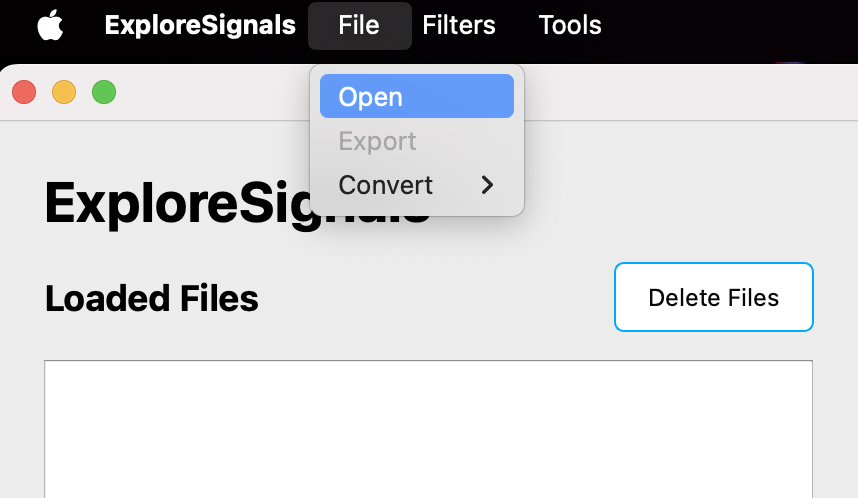
Applying filters
Filters can be applied from the Filters menu in the menu bar.
To apply filters:
-
Select the file you want to filter in the
Loaded Filessection. -
Navigate to:
Filters > Apply Filters
-
Enter values for the filters you want to use.
-
Click Apply to filter the data.
The following filters are available:
-
High-pass filter
-
Low-pass filter
-
Notch filter, for example to remove
50 Hzor60 Hzline noise -
Re-referencing options
-
DC offset correction
The filtered data is added to the Loaded Files section. Its name is based on the original file name and metadata about the applied filters.
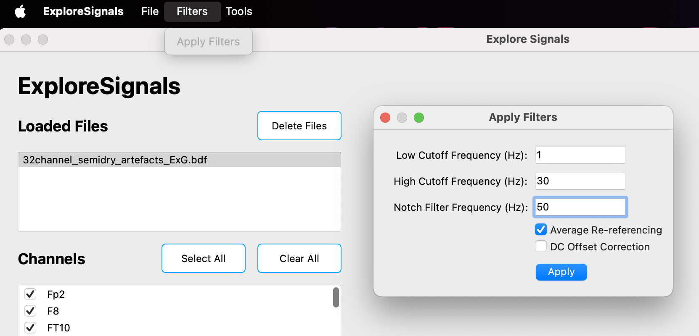
Channel selection
To enable or disable channels for visualization:
-
Select a file in the
Loaded Filessection. -
Check or uncheck channels in the
Channelssection. -
Use one of the visualization actions.
To quickly enable or disable all channels, use the Select All and Clear All buttons above the Channels section.
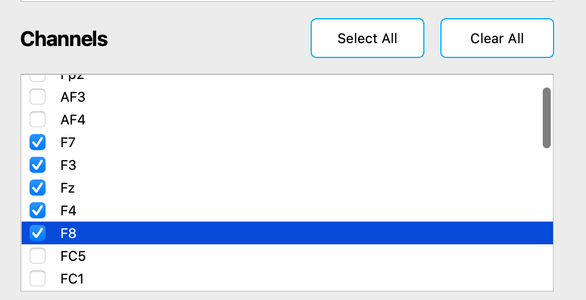
Visualization options
Click the corresponding button to visualize the selected data.
| Use the interactive toolbar above the plots to zoom, pan, and explore plots in detail. |
Time-domain plot
Use Plot Time Domain to view the raw signal over time.
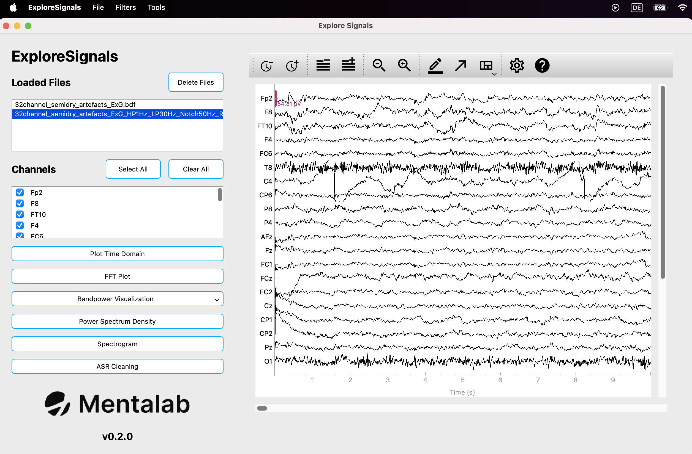
FFT plot
Use FFT Plot to visualize frequency content using the Fast Fourier Transform.
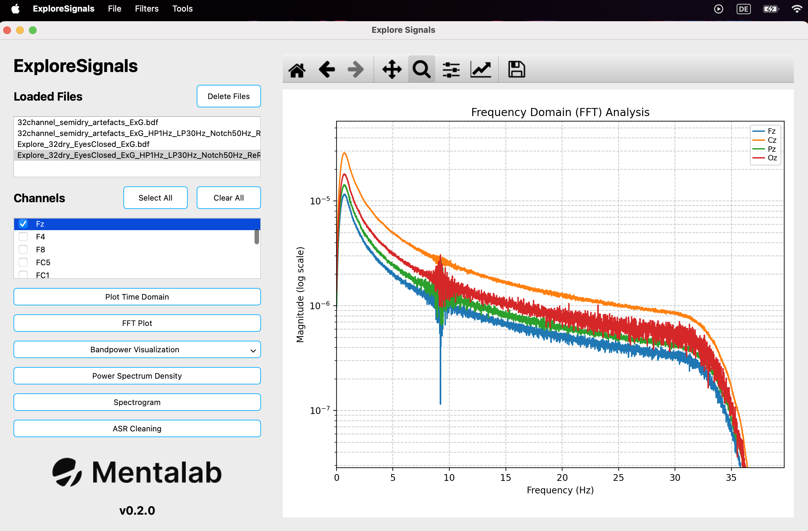
Bandpower visualization
Use Bandpower Visualization to show power in defined frequency bands:
-
Delta
-
Theta
-
Alpha
-
Beta
-
Gamma
The plots show the average for the selected channels.
When clicking Bandpower Visualization, two visualization options are available.
Power Spectrum Density
Use Power Spectrum Density to analyze power distribution over frequency.
The plot shows the average for the selected channels.
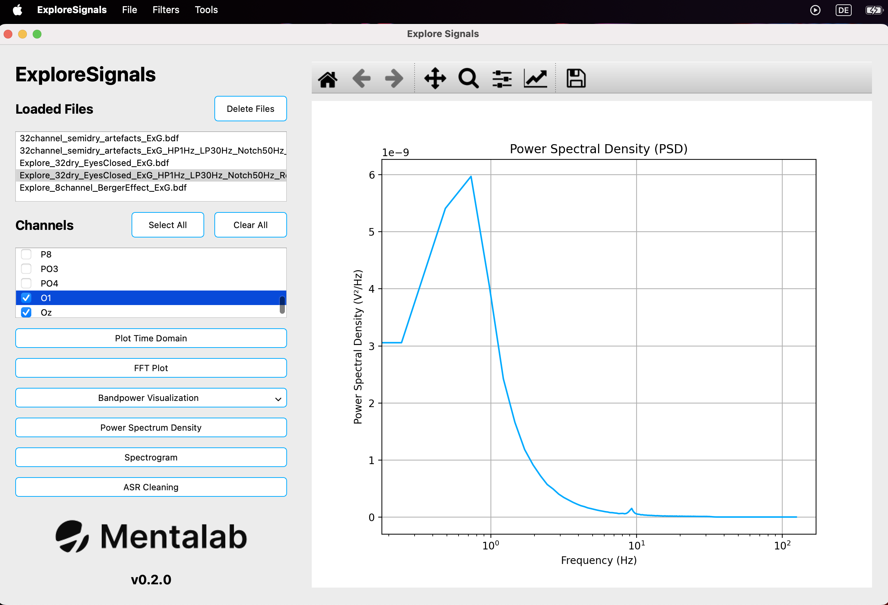
Spectrogram
Use Spectrogram to display power as a function of time and frequency.
The plot shows the average for the selected channels.
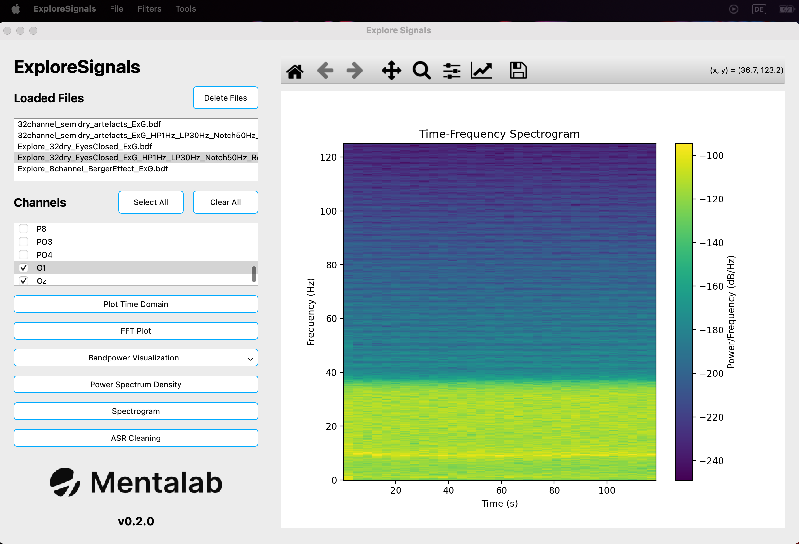
ASR cleaning
Use ASR Cleaning to apply Artifact Subspace Reconstruction to the data and visualize the cleaned signal alongside the original signal.
For more details, refer to the section on ASR.
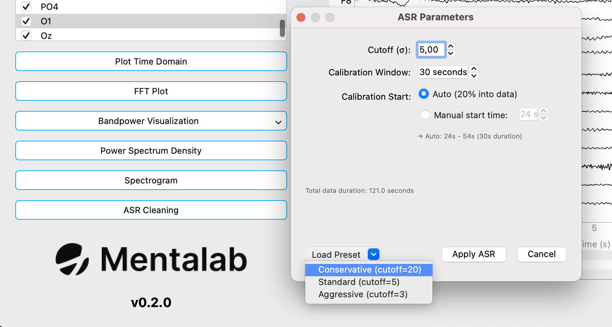
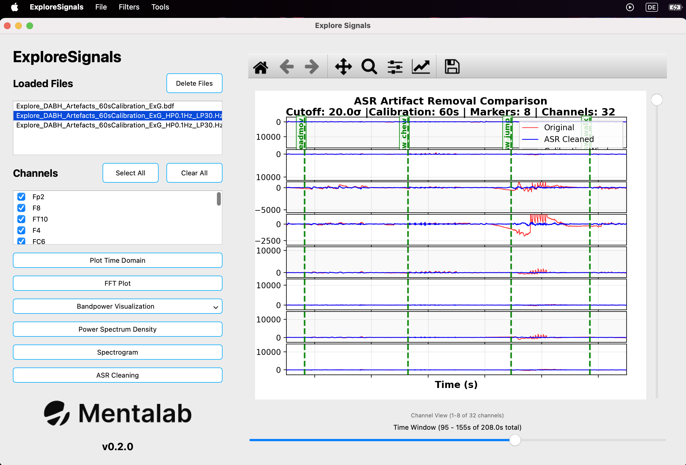
Exporting data
Original and processed data can be exported from the File menu in the menu bar.
To export data:
-
Select the file you want to export in the
Loaded Filessection. -
Navigate to:
File > Export
-
Choose the file name.
-
Select the output file format.
Supported export formats include:
-
.csv -
.bdf
-
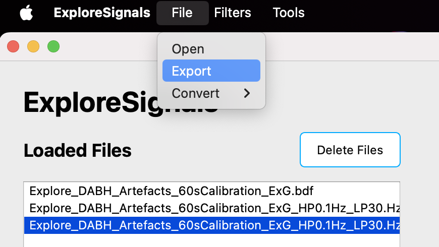
Artifact Subspace Reconstruction
Artifact Subspace Reconstruction, or ASR, is used to remove artifacts from EEG data.
The ASR implementation in Explore Signals is based on parts of the open-source clean_rawdata plugin for EEGLAB.
| If you plan to apply ASR and work with cleaned data, make sure you understand the method and its limitations. ASR may remove signal together with artifacts and performs better on certain types of data. |
ASR requires a calibration window. This should be a section of the data with as few artifacts as possible, ideally none.
Keep this in mind when selecting:
-
calibration window length
-
calibration start time
The algorithm is recommended for EEG signals. Output for other biosignals may be worse, for example if more signal than artifact is removed from the data.
Another factor to consider is the number of channels. ASR requires multiple channels to clean signals effectively. Research suggests that ASR can achieve effective artifact removal for standard 20-channel EEG[1].
Standard deviation cutoff
The Cutoff field in the ASR pop-up refers to the standard deviation cutoff applied during cleaning.
This cutoff determines the thresholds used, relative to the calibration data, for recognizing portions of the data as artifacts.
-
A lower cutoff causes more data to be recognized as artifacts.
-
A higher cutoff causes less data to be recognized as artifacts.
The available presets are:
-
3.0— aggressive -
5.0— standard and default in Explore Signals -
20.0— conservative and default in EEGLAB’sclean_rawdataplugin
Going below a cutoff of 3.0 is not recommended and is blocked by Explore Signals.
|
Calibration window
The Calibration Window determines the size of the data window used for calibration.
The default and minimum value is:
30.0 s
For a cutoff of 20.0, the recommended calibration window is:
60.0 s
Calibration start
The Calibration Start determines the beginning of the calibration window.
The default setting is Auto. This automatically places the start of the calibration window at 20% into the recording.
For example, if:
-
the recording is
120.0 s -
the calibration window is
30.0 s -
Autois selected forCalibration Start
then the calibration window is placed from 24.0 s to 54.0 s.
Alternatively, you can manually choose the start of the calibration window by selecting Manual start time and changing the corresponding field to the desired starting second.
Applying ASR to a loaded file
To clean data using ASR:
-
Load a file.
-
Select it in the
Loaded Filessection. -
Click ASR Cleaning.
-
Adjust the ASR parameters in the pop-up.
-
Optional: click Load Preset to load a recommended preset.
Available presets are:
-
Aggressive-
Cutoff:
3.0 -
Calibration window:
30 s
-
-
Standard-
Cutoff:
5.0 -
Calibration window:
30 s
-
-
Conservative-
Cutoff:
20.0 -
Calibration window:
60 s
-
When you are finished changing the parameters, click Apply ASR.
Explore Signals cleans the data and then opens a comparison view showing the cleaned data and the original data.
| The ASR implementation applies a high-pass filter internally to correct for drift. The resulting cleaned signal is also zero-mean. If the original data is not filtered or zero-mean, the cleaned signal may not appear overlaid with the same baseline as the original signal. |
The cleaned data is added to the Loaded Files section and can be visualized and analyzed like other loaded data.
Converting and repairing recordings
Converting to and from CSV and BDF
To convert an existing recording from .csv to .bdf or from .bdf to .csv:
-
Load the file you want to convert.
-
Export it to the other format.
Converting to EEGLAB dataset
Recordings in .csv, .edf, or .bdf format can be converted to .set files compatible with MATLAB’s EEGLAB plugin.
To convert recordings to EEGLAB datasets:
-
Navigate to:
File > Convert > Convert files to EEGLab
-
Select the folder containing the
.edfor.bdffiles to convert.
The .set files are created in a subfolder named datasets inside the selected directory.
To convert recordings from .csv format, the respective _Meta.csv file must be present in the same folder.
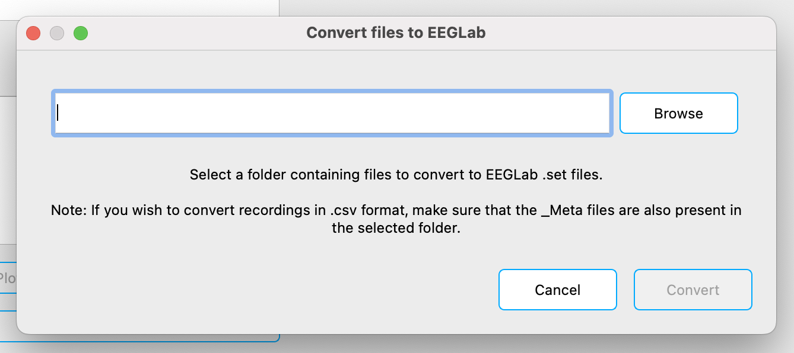
Recordings in .csv and .bdf format can be converted to EEGLAB .set files.
Converting from BIN
You can convert binary files from the Explore device internal memory, in .BIN format, to .csv or .bdf files.
To convert a .BIN file:
-
Navigate to:
File > Convert > Convert .BIN to .csv or .bdf
-
Select the binary file to convert.
-
Select the folder where the converted files should be saved.
-
Select the output file format.
Converting to .csv generates four files:
-
_ExG.csv -
_ORN.csv -
_Marker.csv -
_Meta.csv
Converting to .bdf generates two files:
-
_ExG.bdf -
_ORN.bdf
Markers are written to the ExG file.
The data is written in BDF+ format using 24-bit resolution, as opposed to EDF or EDF+.
|
If you change the device sampling rate or channel mask during recording, conversion creates a new .csv or .bdf file for the ExG data. The file name includes the selected file name plus the time at which the setting changed.
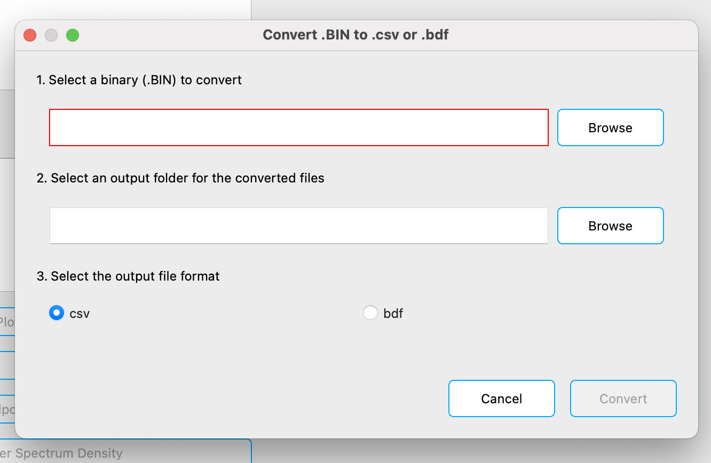
Recordings from the Explore device internal memory can be converted from binary format to .csv or .bdf.
Repairing CSV recordings
If packets are dropped during recording with explorepy or Explore Desktop, the binary file from the Explore device can be used to repair the recorded .csv file.
To repair a recorded .csv file:
-
Place the
.csvfile and the matching.BINfile in the same folder. -
Navigate to:
Tools > Repair ExG .csv with .BIN
-
Select the
.csvfile to repair. -
Click Repair.
The repaired file is placed in the same folder as the selected file. It is named like the selected file, but with _recovered_ExG added to the file name.
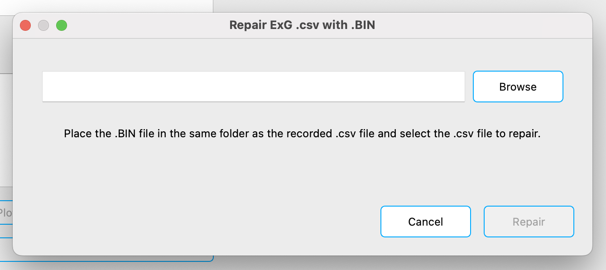
Recordings made with explorepy or Explore Desktop that may have missing samples can be repaired using a matching binary file from the Explore device internal memory.
Support
For more information or support, contact support@mentalab.com.